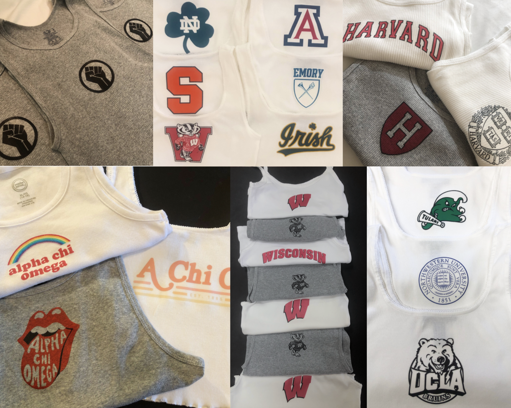

Three months into the coronavirus quarantine I found myself unmotivated and in need of a creative outlet. I am always looking for new merchandise to rep my college but found it was all too expensive or unoriginal. Yet as a person who always tries to do it myself I did some research and found a way to create my own one of a kind t-shirts. I began by making Wisconsin tank-tops but as the demand increased I started taking orders for other schools as well. In addition I also began to sell t-shirts and sweatpants. In just a couple months I amassed a large social media following, shipped shirts around the world, and created meaningful relationships with customers.
I am so incredibly proud of the work I did and I believe it is a true testament to the determination and care I put into what I am passionate about.

Click here to check out the Instagram
Featured in the student newspaper "The Daily Cardinal"
"I have a few shirts from aroseandclothes, and they are so cute and comfortable! I love that I’m able to customize a shirt for such an affordable price and can wear them anywhere."-Annette Mayorkas
"I wear aroseandclothes apparel ALL the time! Definitely a go to in my closet!"-Rachel Jaeger
"So happy I ordered from here - great quality and such cute and unique designs!"-Emma Galinson
"Aroseandclothes has unique, comfortable, and cute clothes for everyone! not only is the brand affordable, but everything is high quality and with amazing service!!"-Gabi Mjaanes
"The quality of the shirts is amazing and the designs are so cute! I wear mine all the time! Love aroseandclothes!!"-Maddix Grady
"Aroseandclothes is extremely affordable and cute! I have so many great tank tops and shirts that I wear all the time! The owner is also super sweet and easy to work with."-Samantha Zwillinger
"Aroseandclothes makes such comfortable and trendy clothing! I’m looking forward to wearing them on game days."-Kelsey Barett
"I’m in love with the clothes i’ve ordered from aroseandclothes! They’re quality staple pieces in my wardrobe."-Grace Sorenson
"My Aroseandclothes is my favorite customizable shirt!! I wear it all the time in the summer and I can’t wait to buy more. Alexa always catered to all my tank tops needs!"-Natalie Coan
"Aroseandclothes is the perfect brand for college students! It is affordable, good quality and super trendy! I love repping my sorority and school in the apparel."-Rachel Mcginley
"Aroseandclothes is the cutest brand. I absolutely love everything i’ve gotten from there it is high quality and i’ve worn my tops a million times."-Melanie Rabishaw